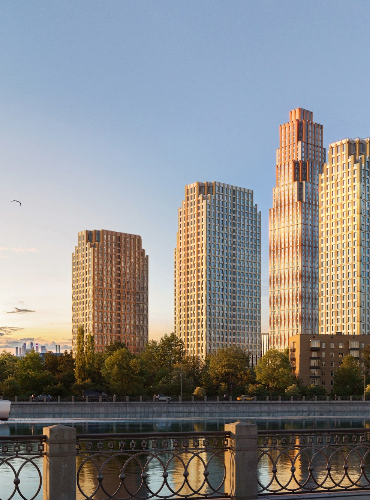

2026

02
О компании
Девелопер редких проектов
С 1999 года создаём в Москве жилую и коммерческую недвижимость бизнес-, премиум- и делюкс-класса
Мы работаем по бутиковой модели: каждый проект проектируется как самостоятельный продукт — с собственной архитектурной идеей, продуктовой концепцией и характером, который невозможно перенести на другой адрес.
В портфеле «Текты» — 19 проектов общей площадью более 2 млн м²: от высотных кварталов премиум-класса до камерного делюкс-проекта в Замоскворечье и премиального бизнес-центра на Ходынском поле.
Не лучший из похожих. Единственный по характеру.